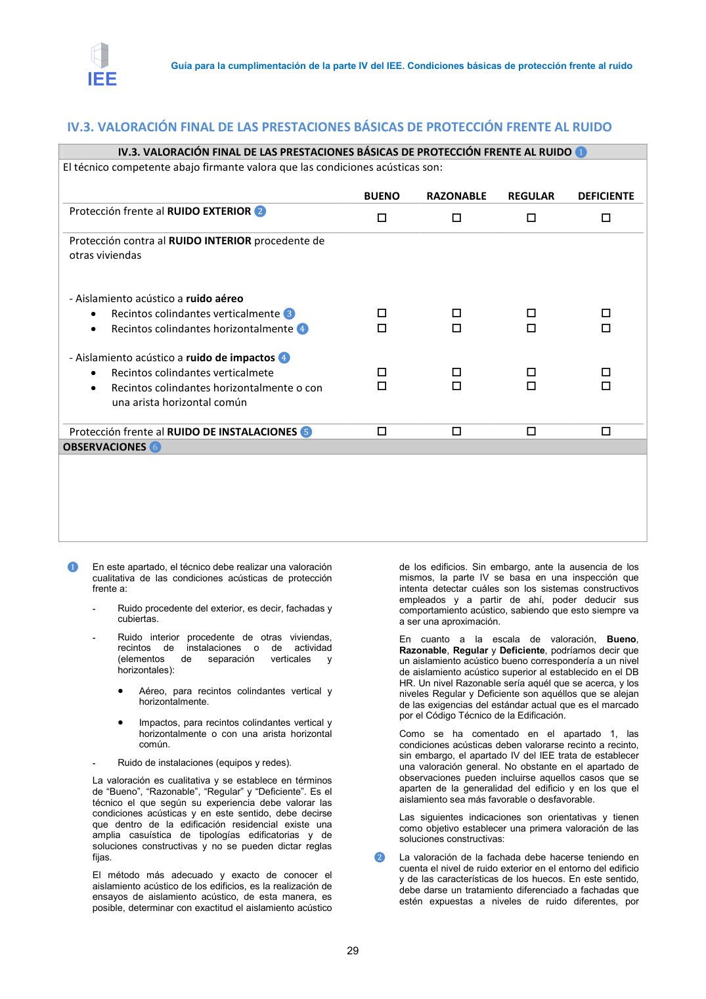

<!doctype html>
<html lang="es"><head><meta charset="utf-8">
<meta name="viewport" content="width=device-width, initial-scale=1">
<title>GUIA · p. 29 — Página 29</title><link rel="stylesheet" href="../estilo.css">
</head><body>
<nav><a href="../index.html">Índice</a> › <a href="../doc/guia-pdf-a5d4ef5252ba-2016-11-01-813669d3066c.html">GUIA</a> › p. 29</nav>

<header class="meta">
<p><strong>GUIA</strong> · Página 29 · versión 2016-11-01</p>
<p>SHA256: <code>813669d3066c0ff79457d57b80b0512a4fbb248bc5db1f7baf473c369a064738</code> · página física 29 de 65 · métodos de encabezado
solo si están cotejados.</p>
<p><a href="../doc/guia-pdf-a5d4ef5252ba-2016-11-01-813669d3066c.html">Documento</a> · <a href="guia-pdf-a5d4ef5252ba-2016-11-01-813669d3066c__p0028.html">← p. 28</a> · <a href="guia-pdf-a5d4ef5252ba-2016-11-01-813669d3066c__p0030.html">p. 30 →</a></p>
<p>Formatos: <a href="../../contenido/docs/GUIA-PDF-a5d4ef5252ba/2016-11-01__813669d3066c/pagina/p0029.md">Markdown</a> · <a href="../../contenido/docs/GUIA-PDF-a5d4ef5252ba/2016-11-01__813669d3066c/bloque/p0029.json">JSON de bloques</a> · <a href="../../contenido/docs/GUIA-PDF-a5d4ef5252ba/2016-11-01__813669d3066c/fuente.pdf#page=29">PDF p. 29</a> · <a href="../../contenido/docs/GUIA-PDF-a5d4ef5252ba/2016-11-01__813669d3066c/figura/p0029.png">imagen PNG</a></p>
</header>
<nav class="paginas"><a href="../doc/guia-pdf-a5d4ef5252ba-2016-11-01-813669d3066c.html">Documento</a> <a href="guia-pdf-a5d4ef5252ba-2016-11-01-813669d3066c__p0028.html">← p. 28</a> <a href="guia-pdf-a5d4ef5252ba-2016-11-01-813669d3066c__p0030.html">p. 30 →</a></nav>
<h2>Encabezado de la página</h2><ul><li>Sin encabezado de fuente cotejada en esta página.</li></ul>

<pre class="literal"> 
Guía para la cumplimentación de la parte IV del IEE. Condiciones básicas de protección frente al ruido 
 
29 
IV.3. VALORACIÓN FINAL DE LAS PRESTACIONES BÁSICAS DE PROTECCIÓN FRENTE AL RUIDO 
IV.3. VALORACIÓN FINAL DE LAS PRESTACIONES BÁSICAS DE PROTECCIÓN FRENTE AL RUIDO ❶ 
El técnico competente abajo firmante valora que las condiciones acústicas son: 
 
 
BUENO 
RAZONABLE 
REGULAR 
DEFICIENTE 
Protección frente al RUIDO EXTERIOR ❷ 
 
 
 
 
 
Protección contra al RUIDO INTERIOR procedente de 
otras viviendas  
 
 
 
 
 
 
 
 
 
 
- Aislamiento acústico a ruido aéreo 
 
 
 
 
• 
Recintos colindantes verticalmente ❸ 
 
 
 
 
• 
Recintos colindantes horizontalmente ❹ 
 
 
 
 
 
 
 
 
 
- Aislamiento acústico a ruido de impactos ❹ 
 
 
 
 
• 
Recintos colindantes verticalme te  
 
 
 
 
• 
Recintos colindantes horizontalmente o con 
una arista horizontal común 
 
 
 
 
 
Protección frente al RUIDO DE INSTALACIONES ❺ 
 
 
 
 
 
OBSERVACIONES ❻ 
 
 
 
 
 
 
 
❶ 
En este apartado, el técnico debe realizar una valoración 
cualitativa de las condiciones acústicas de protección 
frente a: 
- 
Ruido procedente del exterior, es decir, fachadas y 
cubiertas.  
- 
Ruido interior procedente de otras viviendas, 
recintos 
de 
instalaciones 
o 
de 
actividad 
(elementos 
de 
separación 
verticales 
y 
horizontales): 
• 
Aéreo, para recintos colindantes vertical y 
horizontalmente. 
• 
Impactos, para recintos colindantes vertical y 
horizontalmente o con una arista horizontal 
común. 
- 
Ruido de instalaciones (equipos y redes). 
La valoración es cualitativa y se establece en términos 
de “Bueno”, “Razonable”, “Regular” y “Deficiente”. Es el 
técnico el que según su experiencia debe valorar las 
condiciones acústicas y en este sentido, debe decirse 
que dentro de la edificación residencial existe una 
amplia casuística de tipologías edificatorias y de 
soluciones constructivas y no se pueden dictar reglas 
fijas.  
El método más adecuado y exacto de conocer el 
aislamiento acústico de los edificios, es la realización de 
ensayos de aislamiento acústico, de esta manera, es 
posible, determinar con exactitud el aislamiento acústico 
de los edificios. Sin embargo, ante la ausencia de los 
mismos, la parte IV se basa en una inspección que 
intenta detectar cuáles son los sistemas constructivos 
empleados y a partir de ahí, poder deducir sus 
comportamiento acústico, sabiendo que esto siempre va 
a ser una aproximación. 
En cuanto a la escala de valoración, Bueno, 
Razonable, Regular y Deficiente, podríamos decir que 
un aislamiento acústico bueno correspondería a un nivel 
de aislamiento acústico superior al establecido en el DB 
HR. Un nivel Razonable sería aquél que se acerca, y los 
niveles Regular y Deficiente son aquéllos que se alejan 
de las exigencias del estándar actual que es el marcado 
por el Código Técnico de la Edificación.  
Como se ha comentado en el apartado 1, las 
condiciones acústicas deben valorarse recinto a recinto, 
sin embargo, el apartado IV del IEE trata de establecer 
una valoración general. No obstante en el apartado de 
observaciones pueden incluirse aquellos casos que se 
aparten de la generalidad del edificio y en los que el 
aislamiento sea más favorable o desfavorable. 
Las siguientes indicaciones son orientativas y tienen 
como objetivo establecer una primera valoración de las 
soluciones constructivas:  
❷ 
La valoración de la fachada debe hacerse teniendo en 
cuenta el nivel de ruido exterior en el entorno del edificio 
y de las características de los huecos. En este sentido, 
debe darse un tratamiento diferenciado a fachadas que 
estén expuestas a niveles de ruido diferentes, por 
</pre>
<figure><a href="../../contenido/docs/GUIA-PDF-a5d4ef5252ba/2016-11-01__813669d3066c/figura/p0029.png"></a><figcaption>Imagen de la página 29 (PNG ya extraído; prevalece sobre fórmulas).</figcaption></figure>
<h2>Tablas candidatas de esta página</h2><ul><li><a href="../../contenido/docs/GUIA-PDF-a5d4ef5252ba/2016-11-01__813669d3066c/tabla/p0029_t01.json">p0029_t01.json</a> · <a href="../../contenido/docs/GUIA-PDF-a5d4ef5252ba/2016-11-01__813669d3066c/tabla/p0029_t01.csv">.csv</a> (4 × 3; candidata, no reconstruida aquí)</li></ul>
<h2>Referencias, notas y excepciones (página y vecinas)</h2><ul><li><a href="../apartado/guia-pdf-a5d4ef5252ba-2016-11-01-813669d3066c__a0017.html">ID a0017 · sección,</a></li><li><a href="../apartado/guia-pdf-a5d4ef5252ba-2016-11-01-813669d3066c__a0018.html">ID a0018 · IV.3. VALORACIÓN FINAL DE LAS PRESTACIONES BÁSICAS DE PROTECCIÓN FRENTE AL RUIDO</a></li></ul>
<h2>Apartados que incluyen esta página</h2><ul><li><a href="../apartado/guia-pdf-a5d4ef5252ba-2016-11-01-813669d3066c__a0017.html">ID a0017 · sección,</a></li><li><a href="../apartado/guia-pdf-a5d4ef5252ba-2016-11-01-813669d3066c__a0018.html">ID a0018 · IV.3. VALORACIÓN FINAL DE LAS PRESTACIONES BÁSICAS DE PROTECCIÓN FRENTE AL RUIDO</a></li></ul>

<footer>Generado estáticamente desde JSON normalizado; sin JavaScript ni servicios externos.
El JSON es la fuente; este HTML es caché reproducible.</footer>
</body></html>
